上高地に来たならば明神嘉門次小屋の岩魚の塩焼き定食はかかせないということで、身体３級のくせに片道 3.5km、健常者の脚で約 70 分の距離をむちゃくちゃ頑張って歩く。
途中いろいろ撮りながら歩く。
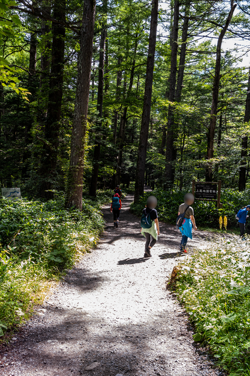
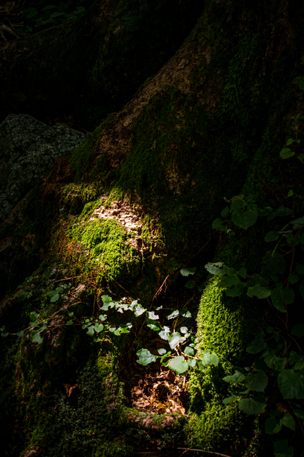
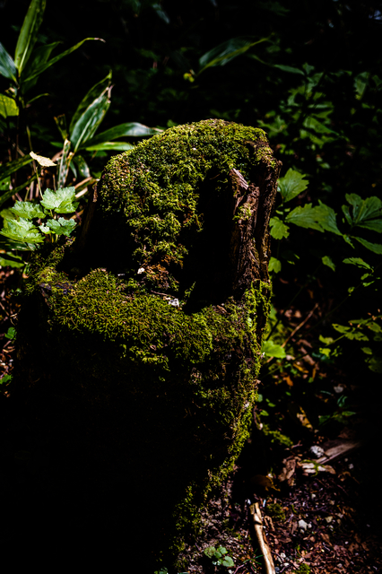
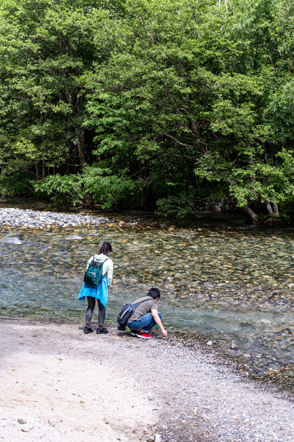
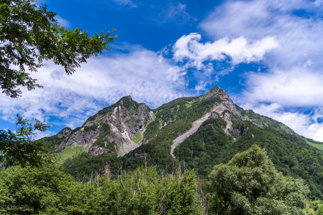
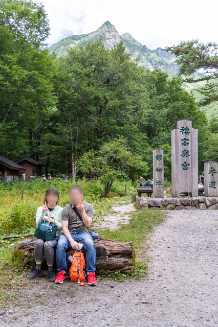
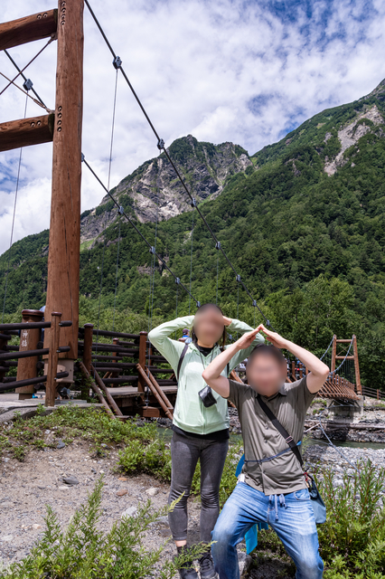
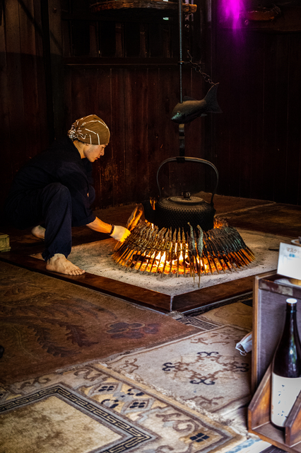
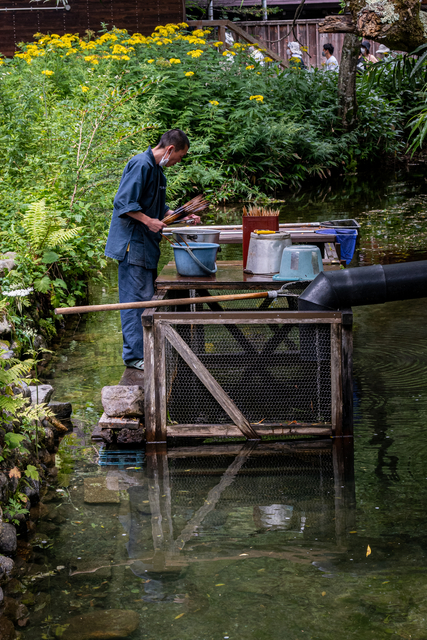
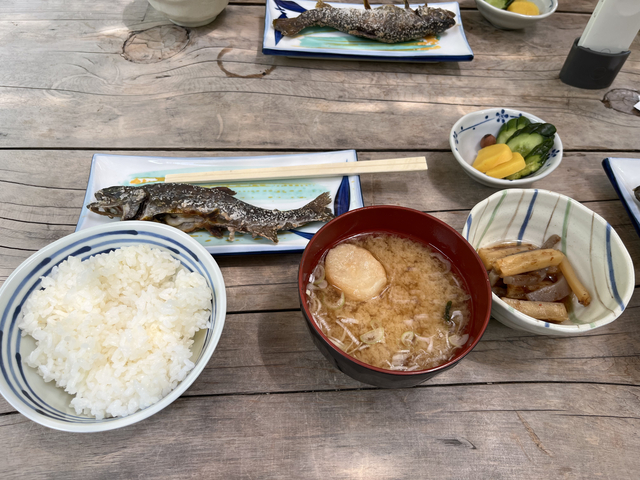
穂高神社奥宮明神一之池参拝
Aug 11, 2022 穂高神社御神体 #RicohThetaSC2 #theta360 - Spherical Image - RICOH THETA
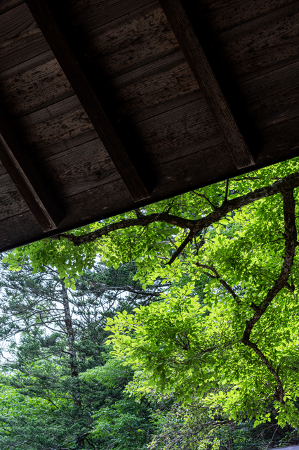
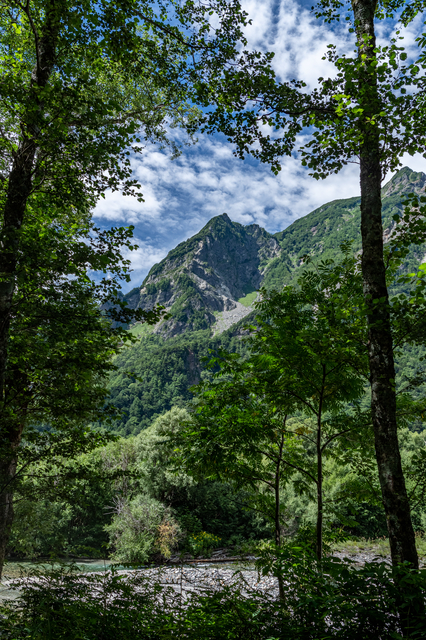
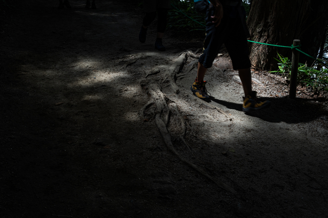
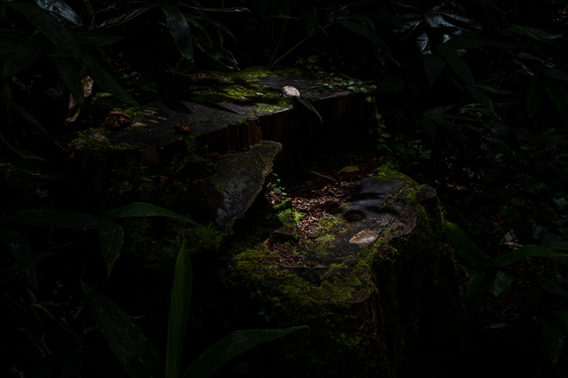
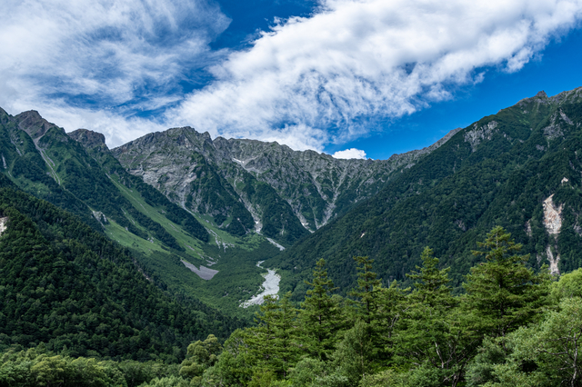
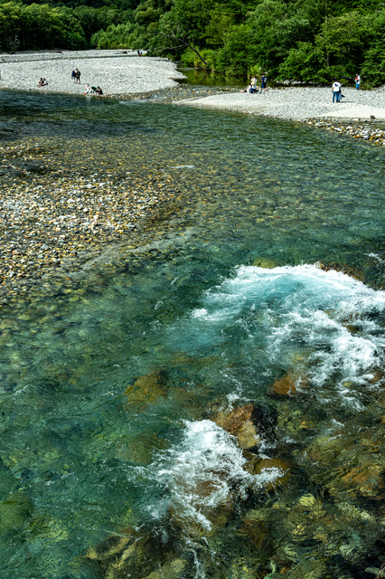
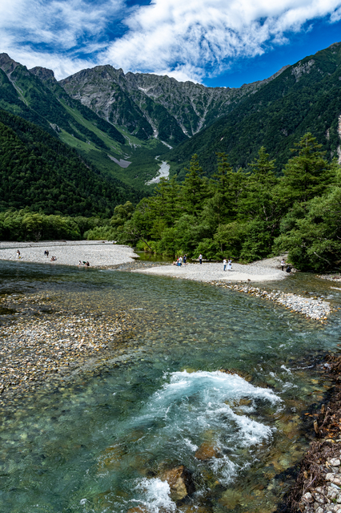
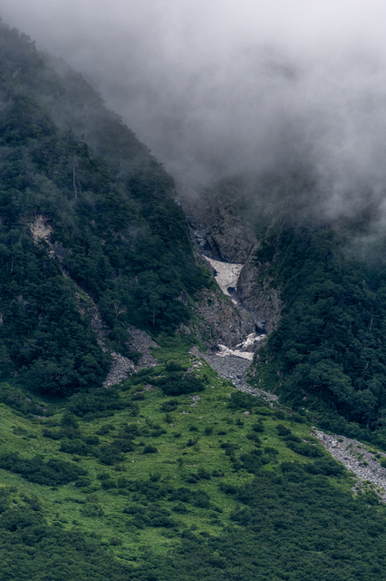